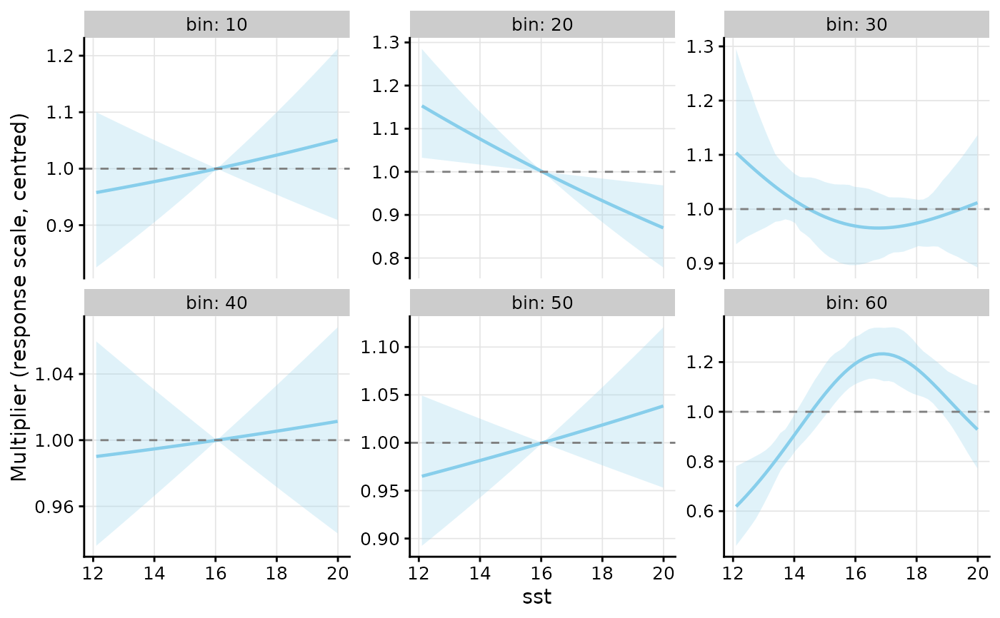

Plot marginal smooth effects of a continuous covariate by bin
Source:R/post_proc.R
cvar_smooth_plot.RdPlots the centred smooth effect of a continuous covariate with 95%
confidence intervals for each bin level. Works for both sdmTMB and brms
backends, and for both spl = "by_factor" (s(cvar, by=bin))
and spl = "2D" (t2(cvar, cbin)) spline types.
Fixed effects and IID random effects are marginalised out so only the
covariate smooth contribution is shown.
Arguments
- fit
A
ComPoMobject fromfit_model()withcvarsset.- cvar
Character. Name of the continuous covariate to plot. Defaults to the first element of
fit$cvars.- ref_ffx
Named list of reference values for the fixed-effect factor variables (e.g.
list(yy = 2015)). Defaults to the first observed value of each fixed-effect variable detected from the model formula.- ref_re
Character. Reference level of the nuisance RE variable. Defaults to the first level of the first RE variable.
- n_grid
Integer. Number of covariate values in the prediction grid. Default 50.
Examples
dat <- data_prep(ex_comp, c("Year", "Season", "Vessel", "trip", "sst"), "length", "count")
dat$sst <- as.numeric(as.character(dat$sst))
fit <- fit_model("Year", "Season", cvars = "sst", spl = "by_factor", knots = "4",
data = dat, backend = "TMB", iter = 300, warmup = 100, thin = 2)
#> Model formula: tot_by_bin ~ 0 + bin + factor(Year):bin + (1 | bin:Season) + s(sst, by = bin, k = 4)
cvar_smooth_plot(fit, "sst")
